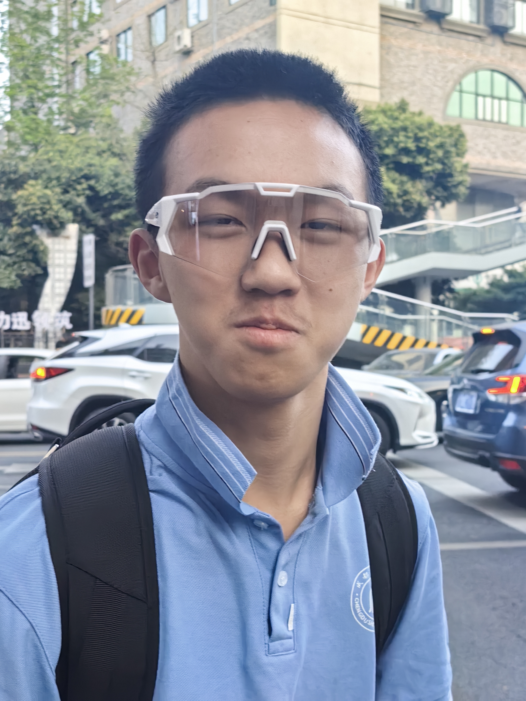
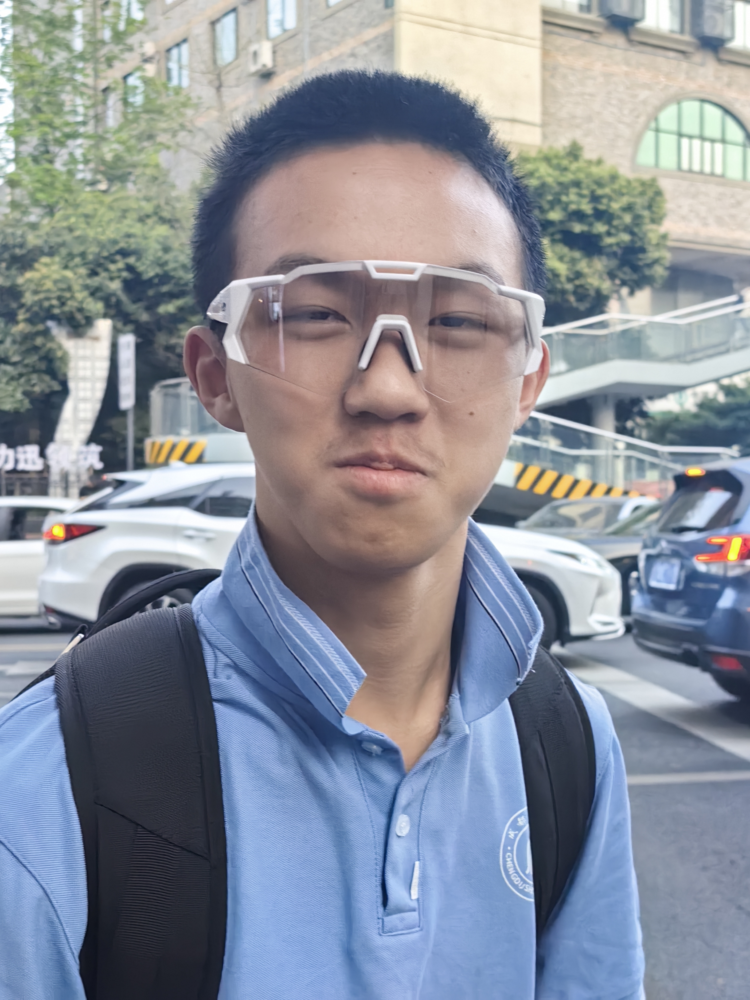

Kinematics studies the motion of objects without considering the forces acting on them. It mainly describes the relationships among displacement, velocity, and acceleration.
运动学研究物体的运动，而不考虑受力，主要描述位移、速度与加速度之间的关系。
Key Equations (主要公式):
v = v₀ + atv = v₀ + atx = v₀t + ½at²x = v₀t + ½at²v² = v₀² + 2a(x - x₀)v² = v₀² + 2a(x - x₀)v_avg = (v + v₀) / 2v_avg = (v + v₀) / 2
First Law (Law of Inertia): An object at rest stays at rest, and an object in motion remains in uniform motion unless acted on by a net force.
第一定律（惯性定律）：若无外力或合力为零，静止的物体保持静止，运动的物体保持匀速直线运动。
Second Law: F = ma, which means the net force determines the direction and magnitude of acceleration.
第二定律：F = ma，合外力决定加速度的大小和方向。
Third Law: For every action, there is an equal and opposite reaction, acting on different objects.
第三定律：作用力与反作用力大小相等、方向相反，且作用在不同物体上。
Important Skills: Draw free-body diagrams, keep direction consistent, and analyze systems as a whole or in parts.
重要技巧：绘制受力图、方向统一、整体与局部分析方法。
Definition of Work: W = Fd cosθ, where θ is the angle between force and displacement.
功的定义：W = Fd cosθ，θ为力与位移的夹角。
Work-Energy Theorem: The net work done by all forces equals the change in kinetic energy: W_net = ΔK = ½mv² - ½mv₀².
动能定理：合外力做的功等于动能变化：W_net = ΔK = ½mv² - ½mv₀²。
Mechanical Energy Conservation: If only conservative forces do work, total mechanical energy is conserved: E = K + U = constant.
机械能守恒：仅有保守力做功时，系统总机械能守恒：E = K + U = 常量。
Power: P = W/t or P = Fv, measures how quickly work is done, in watts (W).
功率：P = W/t 或 P = Fv，表示做功的快慢，单位为瓦特（W）。
Momentum: p = mv, describes the combination of mass and velocity.
动量：p = mv，表示物体的惯性与速度的结合。
Impulse: J = FΔt, is the effect of a force acting over time. Impulse equals the change in momentum: J = Δp.
冲量：J = FΔt，是力在一定时间内的积累效应，等于动量的变化：J = Δp。
Law of Conservation of Momentum: If net external force is zero, total momentum is conserved: ∑p_initial = ∑p_final.
动量守恒定律：外力合力为零时，系统总动量守恒：∑p_initial = ∑p_final。
Types of Collisions:
Rotation is angular motion, similar to linear motion but involving angle, angular velocity, and angular acceleration.
转动运动是角度上的运动，类似于直线运动，但关注角位移、角速度和角加速度。
Moment of Inertia: I = ∑mr², depends on the object's shape. The larger I is, the harder to rotate.
转动惯量：I = ∑mr²，不同形状有不同I。I越大越难旋转。
Angular Momentum: L = Iω, is conserved if no external torque.
角动量：L = Iω，无外力矩时守恒。
Torque: τ = r × F, causes rotation, similar to force in linear motion.
力矩：τ = r × F，是产生转动的原因，对应直线运动中的力。
Rotational Kinetic Energy: K_rot = ½Iω².
转动动能：K_rot = ½Iω²。
Simple Harmonic Motion (SHM): Acceleration is proportional and opposite to displacement, e.g. x(t) = A cos(ωt + φ).
简谐运动：加速度与位移成正比且方向相反，如x(t) = A cos(ωt + φ)。
Period and Frequency:
T = 2π√(m/k)T = 2π√(L/g)T = 2π√(m/k)T = 2π√(L/g)
Energy Conservation: Kinetic and potential energy periodically exchange, total mechanical energy is constant.
能量守恒：动能和势能周期性交替，总机械能守恒。
Newton's Law of Universal Gravitation: F = Gm₁m₂/r², G is the gravitational constant.
牛顿万有引力定律：F = Gm₁m₂/r²，G为引力常数。
Orbital Motion: The centripetal force for a satellite in circular orbit is provided by gravity: v = √(GM/r), T² ∝ r³.
轨道运动：圆轨道的向心力由引力提供：v = √(GM/r)，T² ∝ r³。
Potential Energy: U = -GmM/r, negative sign shows it is bound energy.
势能：U = -GmM/r，负号表示束缚势能。
Kepler's Laws:
T² ∝ a³.T² ∝ a³。
Discussion Zone
Share your thoughts or questions about Physics C Mechanics: